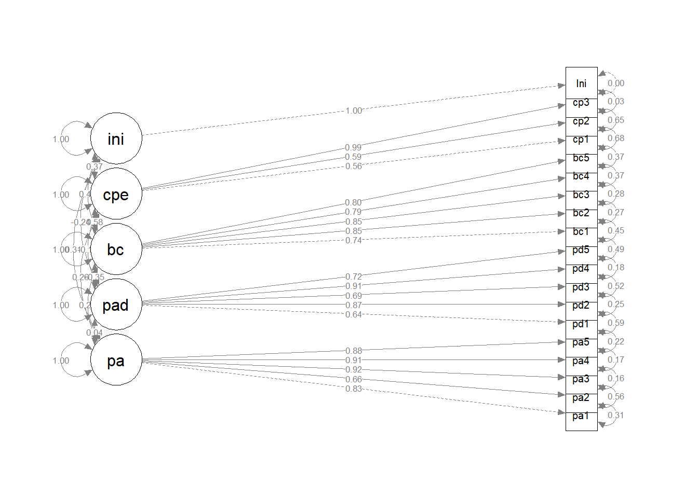
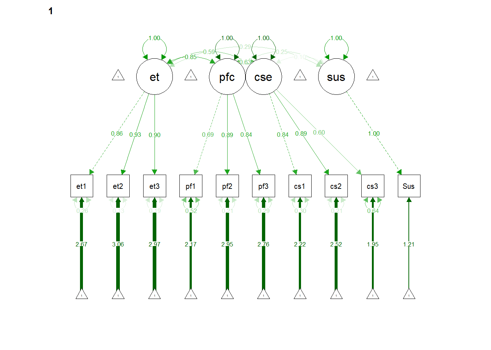

library(here)
library(tidyverse)
library(corrplot)
library(semTools)
library(lavaanPlot)
library(tidySEM)
library(semPlot)
library(ltm)
library(psych)Initiation and Sustenance of Quitting Gambling
Testing Measurement Invariance
We implement a measurement invariance analysis using the Confirmatory Factor Analysis to show that the instrument is valid across problem and non-problem gamblers. The CFA is related to the measurement side of the Structural Equation Modeling framework and is sufficient in proving instrument validity.
Loading in the Dataset
I am loading the recoded dataset that you provided me into R.
gambling <- read.csv("Gambling behavior among college students_RECODED.csv") |> as_tibble()
gambling <- gambling |> mutate(Gambled = ifelse(GambleD==0,0,1))I introduced a new variable named Gambled, where Gambled=0 corresponds to whether the participant gambled within the past 30 days. Else, Gambled=1.
Summary statistics of the scores
Let’s look at the summary statistics of the scores first.
gambling |> summarize(PA_mean = mean(PA),
PA_sd = sd(PA),
PA_median=as.numeric(quantile(PA,0.5)),
PAD_mean = mean(PAD),
PAD_sd = sd(PAD),
PAD_median=as.numeric(quantile(PAD,0.5)),
PD_mean = mean(PD),
PD_sd = sd(PD),
PD_median=as.numeric(quantile(PD,0.5)),
BC_mean = mean(BC),
BC_sd = sd(BC),
BC_median=as.numeric(quantile(BC,0.5)),
CPE_mean = mean(CPE),
CPE_sd = sd(CPE),
CPE_median=as.numeric(quantile(CPE,0.5)),
ET_mean = mean(ET),
ET_sd = sd(ET),
ET_median=as.numeric(quantile(ET,0.5)),
PfC_mean = mean(PfC),
PfC_sd = sd(PfC),
PfC_median=as.numeric(quantile(PfC,0.5)),
CSE_mean = mean(CSE),
CSE_sd = sd(CSE),
CSE_median=as.numeric(quantile(CSE,0.5)),
Ini_mean = mean(Ini),
Ini_sd = sd(Ini),
Ini_median=as.numeric(quantile(Ini,0.5)),
Sus_mean = mean(Sus),
Sus_sd = sd(PA),
Sus_median=as.numeric(quantile(Sus,0.5))
) |>
pivot_longer(cols=1:30,
names_prefix = c("pa","pad","bc","cpe","Ini",
"et","pfc","cse","Sus"),
names_to= "SummaryStats",
values_to="Values") |>
mutate(Values=round(Values,2)) |> as.data.frame()Warning in gsub(vec_paste0("^", names_prefix), "", cols): argument 'pattern'
has length > 1 and only the first element will be used SummaryStats Values
1 PA_mean 13.75
2 PA_sd 5.83
3 PA_median 15.00
4 PAD_mean 3.92
5 PAD_sd 4.38
6 PAD_median 2.00
7 PD_mean 9.83
8 PD_sd 7.19
9 PD_median 10.00
10 BC_mean 16.01
11 BC_sd 4.49
12 BC_median 17.00
13 CPE_mean 6.93
14 CPE_sd 3.59
15 CPE_median 7.00
16 ET_mean 10.32
17 ET_sd 2.61
18 ET_median 12.00
19 PfC_mean 9.79
20 PfC_sd 2.81
21 PfC_median 11.00
22 CSE_mean 9.19
23 CSE_sd 3.19
24 CSE_median 10.00
25 Ini_mean 3.47
26 Ini_sd 1.09
27 Ini_median 4.00
28 Sus_mean 2.64
29 Sus_sd 5.83
30 Sus_median 3.00Cronbach’s alpha
We calculate Cronbach’s alpha for the responses using the cronbach.alpha() function in the package ltm.
responses <- gambling |>
dplyr::select(starts_with(c("pa","pad","bc","cpe","Ini",
"et","pfc","cse","Sus"),ignore.case=F))
cronbach.alpha(responses,CI=T,standardized = T)
Standardized Cronbach's alpha for the 'responses' data-set
Items: 29
Sample units: 1474
alpha: 0.883
Bootstrap 95% CI based on 1000 samples
2.5% 97.5%
0.871 0.893 Overall Cronbach’s alpha is estimated to be 0.883 (95% CI=(0.872,0.893)) higher than 0.70, which leads us to conclude that the instrument is acceptable.
We then look at the specific Cronbach’s alphas for each construct.
Perceived Advantage
gambling |> dplyr::select(starts_with("pa",ignore.case=F) &!starts_with("pad")) |> alpha()
Reliability analysis
Call: alpha(x = dplyr::select(gambling, starts_with("pa", ignore.case = F) &
!starts_with("pad")))
raw_alpha std.alpha G6(smc) average_r S/N ase mean sd median_r
0.93 0.93 0.92 0.71 12 0.0029 2.7 1.2 0.73
95% confidence boundaries
lower alpha upper
Feldt 0.92 0.93 0.93
Duhachek 0.92 0.93 0.93
Reliability if an item is dropped:
raw_alpha std.alpha G6(smc) average_r S/N alpha se var.r med.r
pa1 0.91 0.91 0.90 0.71 9.9 0.0037 0.0157 0.71
pa2 0.93 0.93 0.92 0.77 13.8 0.0029 0.0039 0.76
pa3 0.89 0.89 0.87 0.68 8.4 0.0043 0.0069 0.69
pa4 0.90 0.90 0.88 0.69 8.8 0.0042 0.0062 0.70
pa5 0.91 0.91 0.90 0.71 9.9 0.0038 0.0102 0.69
Item statistics
n raw.r std.r r.cor r.drop mean sd
pa1 1474 0.88 0.88 0.84 0.81 2.7 1.3
pa2 1474 0.77 0.79 0.71 0.68 3.4 1.1
pa3 1474 0.93 0.93 0.92 0.88 2.7 1.4
pa4 1474 0.92 0.91 0.91 0.87 2.6 1.4
pa5 1474 0.89 0.88 0.84 0.81 2.4 1.5
Non missing response frequency for each item
0 1 2 3 4 miss
pa1 0.11 0.07 0.23 0.23 0.36 0
pa2 0.04 0.03 0.10 0.16 0.66 0
pa3 0.11 0.09 0.22 0.20 0.39 0
pa4 0.12 0.10 0.21 0.18 0.38 0
pa5 0.17 0.10 0.20 0.17 0.35 0Perceived Disadvantage
gambling |> dplyr::select(starts_with("pad",ignore.case=F) ) |> alpha()
Reliability analysis
Call: alpha(x = dplyr::select(gambling, starts_with("pad", ignore.case = F)))
raw_alpha std.alpha G6(smc) average_r S/N ase mean sd median_r
0.88 0.89 0.88 0.61 7.7 0.0049 0.78 0.88 0.66
95% confidence boundaries
lower alpha upper
Feldt 0.87 0.88 0.89
Duhachek 0.87 0.88 0.89
Reliability if an item is dropped:
raw_alpha std.alpha G6(smc) average_r S/N alpha se var.r med.r
pad1 0.90 0.90 0.88 0.70 9.1 0.0044 0.0028 0.68
pad2 0.84 0.85 0.83 0.59 5.7 0.0068 0.0229 0.58
pad3 0.85 0.85 0.82 0.59 5.7 0.0064 0.0127 0.60
pad4 0.84 0.85 0.84 0.59 5.7 0.0068 0.0220 0.60
pad5 0.84 0.85 0.82 0.58 5.5 0.0066 0.0111 0.59
Item statistics
n raw.r std.r r.cor r.drop mean sd
pad1 1474 0.71 0.70 0.57 0.54 1.05 1.10
pad2 1474 0.86 0.86 0.81 0.77 0.83 1.09
pad3 1474 0.84 0.86 0.83 0.76 0.51 0.89
pad4 1474 0.87 0.86 0.81 0.76 0.93 1.21
pad5 1474 0.86 0.87 0.85 0.77 0.60 0.99
Non missing response frequency for each item
0 1 2 3 4 miss
pad1 0.42 0.24 0.24 0.07 0.03 0
pad2 0.55 0.19 0.17 0.06 0.03 0
pad3 0.69 0.16 0.10 0.03 0.02 0
pad4 0.54 0.16 0.16 0.09 0.05 0
pad5 0.66 0.16 0.11 0.04 0.02 0Behavioral Confidence
gambling |> dplyr::select(starts_with("bc",ignore.case=F) ) |> alpha()
Reliability analysis
Call: alpha(x = dplyr::select(gambling, starts_with("bc", ignore.case = F)))
raw_alpha std.alpha G6(smc) average_r S/N ase mean sd median_r
0.9 0.9 0.89 0.65 9.1 0.004 3.2 0.9 0.64
95% confidence boundaries
lower alpha upper
Feldt 0.89 0.9 0.91
Duhachek 0.89 0.9 0.91
Reliability if an item is dropped:
raw_alpha std.alpha G6(smc) average_r S/N alpha se var.r med.r
bc1 0.90 0.90 0.88 0.69 8.9 0.0043 0.0039 0.67
bc2 0.86 0.86 0.84 0.61 6.4 0.0058 0.0049 0.64
bc3 0.86 0.87 0.84 0.62 6.5 0.0055 0.0073 0.62
bc4 0.88 0.88 0.86 0.66 7.6 0.0047 0.0117 0.66
bc5 0.88 0.88 0.86 0.65 7.5 0.0049 0.0045 0.63
Item statistics
n raw.r std.r r.cor r.drop mean sd
bc1 1474 0.75 0.78 0.70 0.66 3.6 0.81
bc2 1474 0.90 0.89 0.87 0.83 3.0 1.15
bc3 1474 0.89 0.89 0.86 0.81 3.3 1.05
bc4 1474 0.83 0.83 0.77 0.73 3.3 1.03
bc5 1474 0.86 0.84 0.79 0.75 2.8 1.24
Non missing response frequency for each item
0 1 2 3 4 miss
bc1 0.01 0.02 0.06 0.16 0.74 0
bc2 0.04 0.08 0.17 0.22 0.49 0
bc3 0.03 0.06 0.11 0.23 0.57 0
bc4 0.02 0.06 0.12 0.19 0.61 0
bc5 0.06 0.10 0.23 0.20 0.41 0Changes in Physical Environment
gambling |> dplyr::select(starts_with("cpe",ignore.case=F) ) |> alpha()
Reliability analysis
Call: alpha(x = dplyr::select(gambling, starts_with("cpe", ignore.case = F)))
raw_alpha std.alpha G6(smc) average_r S/N ase mean sd median_r
0.77 0.77 0.72 0.52 3.3 0.01 2.3 1.2 0.44
95% confidence boundaries
lower alpha upper
Feldt 0.75 0.77 0.79
Duhachek 0.75 0.77 0.79
Reliability if an item is dropped:
raw_alpha std.alpha G6(smc) average_r S/N alpha se var.r med.r
cpe1 0.60 0.61 0.44 0.44 1.5 0.0204 NA 0.44
cpe2 0.56 0.57 0.40 0.40 1.3 0.0223 NA 0.40
cpe3 0.84 0.84 0.73 0.73 5.4 0.0082 NA 0.73
Item statistics
n raw.r std.r r.cor r.drop mean sd
cpe1 1474 0.88 0.86 0.79 0.68 2.1 1.6
cpe2 1474 0.89 0.87 0.82 0.71 1.9 1.5
cpe3 1474 0.71 0.74 0.49 0.45 2.9 1.3
Non missing response frequency for each item
0 1 2 3 4 miss
cpe1 0.26 0.11 0.19 0.14 0.30 0
cpe2 0.26 0.15 0.23 0.15 0.22 0
cpe3 0.08 0.08 0.16 0.24 0.45 0Entire Initiation Scale
gambling |> dplyr::select(starts_with(c("pa","pad","bc","cpe","Ini"),ignore.case=F)) |> alpha()Warning in alpha(dplyr::select(gambling, starts_with(c("pa", "pad", "bc", : Some items were negatively correlated with the total scale and probably
should be reversed.
To do this, run the function again with the 'check.keys=TRUE' optionSome items ( pad1 pad2 pad3 pad4 pad5 ) were negatively correlated with the total scale and
probably should be reversed.
To do this, run the function again with the 'check.keys=TRUE' option
Reliability analysis
Call: alpha(x = dplyr::select(gambling, starts_with(c("pa", "pad",
"bc", "cpe", "Ini"), ignore.case = F)))
raw_alpha std.alpha G6(smc) average_r S/N ase mean sd median_r
0.8 0.8 0.91 0.17 4 0.0073 2.3 0.57 0.15
95% confidence boundaries
lower alpha upper
Feldt 0.79 0.8 0.82
Duhachek 0.79 0.8 0.82
Reliability if an item is dropped:
raw_alpha std.alpha G6(smc) average_r S/N alpha se var.r med.r
pa1 0.78 0.78 0.90 0.16 3.5 0.0082 0.091 0.14
pa2 0.79 0.79 0.90 0.17 3.7 0.0078 0.094 0.15
pa3 0.78 0.78 0.89 0.16 3.5 0.0083 0.090 0.14
pa4 0.78 0.78 0.89 0.16 3.5 0.0083 0.090 0.14
pa5 0.78 0.78 0.89 0.16 3.5 0.0084 0.091 0.14
pad1 0.82 0.81 0.91 0.19 4.3 0.0069 0.087 0.16
pad2 0.81 0.80 0.91 0.19 4.1 0.0070 0.085 0.16
pad3 0.80 0.80 0.90 0.18 3.9 0.0073 0.089 0.16
pad4 0.82 0.81 0.91 0.19 4.2 0.0068 0.083 0.16
pad5 0.80 0.80 0.90 0.18 4.0 0.0072 0.088 0.16
bc1 0.80 0.79 0.90 0.17 3.7 0.0076 0.089 0.13
bc2 0.79 0.78 0.89 0.17 3.6 0.0079 0.087 0.14
bc3 0.79 0.78 0.90 0.17 3.6 0.0078 0.087 0.14
bc4 0.80 0.79 0.90 0.17 3.7 0.0076 0.087 0.14
bc5 0.79 0.78 0.90 0.17 3.6 0.0079 0.089 0.14
cpe1 0.80 0.79 0.90 0.17 3.8 0.0075 0.096 0.15
cpe2 0.80 0.79 0.90 0.17 3.7 0.0077 0.096 0.14
cpe3 0.79 0.78 0.90 0.17 3.6 0.0080 0.090 0.14
Ini 0.80 0.79 0.90 0.17 3.8 0.0077 0.094 0.13
Item statistics
n raw.r std.r r.cor r.drop mean sd
pa1 1474 0.649 0.62 0.613 0.569 2.68 1.32
pa2 1474 0.521 0.51 0.482 0.444 3.37 1.06
pa3 1474 0.678 0.65 0.659 0.601 2.67 1.35
pa4 1474 0.684 0.65 0.662 0.605 2.60 1.40
pa5 1474 0.691 0.66 0.656 0.609 2.43 1.48
pad1 1474 0.084 0.11 0.038 -0.018 1.05 1.10
pad2 1474 0.203 0.23 0.196 0.103 0.83 1.09
pad3 1474 0.298 0.34 0.318 0.220 0.51 0.89
pad4 1474 0.131 0.16 0.123 0.019 0.93 1.21
pad5 1474 0.291 0.33 0.311 0.203 0.60 0.99
bc1 1474 0.448 0.48 0.446 0.385 3.60 0.81
bc2 1474 0.553 0.57 0.566 0.472 3.04 1.15
bc3 1474 0.537 0.56 0.550 0.462 3.26 1.05
bc4 1474 0.446 0.47 0.438 0.364 3.31 1.03
bc5 1474 0.557 0.56 0.551 0.470 2.80 1.24
cpe1 1474 0.481 0.44 0.410 0.357 2.11 1.57
cpe2 1474 0.505 0.47 0.437 0.392 1.93 1.48
cpe3 1474 0.578 0.57 0.538 0.492 2.89 1.27
Ini 1474 0.454 0.46 0.407 0.369 3.47 1.09
Non missing response frequency for each item
0 1 2 3 4 miss
pa1 0.11 0.07 0.23 0.23 0.36 0
pa2 0.04 0.03 0.10 0.16 0.66 0
pa3 0.11 0.09 0.22 0.20 0.39 0
pa4 0.12 0.10 0.21 0.18 0.38 0
pa5 0.17 0.10 0.20 0.17 0.35 0
pad1 0.42 0.24 0.24 0.07 0.03 0
pad2 0.55 0.19 0.17 0.06 0.03 0
pad3 0.69 0.16 0.10 0.03 0.02 0
pad4 0.54 0.16 0.16 0.09 0.05 0
pad5 0.66 0.16 0.11 0.04 0.02 0
bc1 0.01 0.02 0.06 0.16 0.74 0
bc2 0.04 0.08 0.17 0.22 0.49 0
bc3 0.03 0.06 0.11 0.23 0.57 0
bc4 0.02 0.06 0.12 0.19 0.61 0
bc5 0.06 0.10 0.23 0.20 0.41 0
cpe1 0.26 0.11 0.19 0.14 0.30 0
cpe2 0.26 0.15 0.23 0.15 0.22 0
cpe3 0.08 0.08 0.16 0.24 0.45 0
Ini 0.05 0.03 0.06 0.11 0.75 0Emotional Transformation
gambling |> dplyr::select(starts_with("et",ignore.case=F) ) |> alpha()
Reliability analysis
Call: alpha(x = dplyr::select(gambling, starts_with("et", ignore.case = F)))
raw_alpha std.alpha G6(smc) average_r S/N ase mean sd median_r
0.92 0.92 0.89 0.8 12 0.0035 3.4 0.87 0.81
95% confidence boundaries
lower alpha upper
Feldt 0.91 0.92 0.93
Duhachek 0.91 0.92 0.93
Reliability if an item is dropped:
raw_alpha std.alpha G6(smc) average_r S/N alpha se var.r med.r
et1 0.91 0.91 0.84 0.84 10.2 0.0047 NA 0.84
et2 0.86 0.87 0.77 0.77 6.5 0.0070 NA 0.77
et3 0.89 0.89 0.81 0.81 8.3 0.0057 NA 0.81
Item statistics
n raw.r std.r r.cor r.drop mean sd
et1 1474 0.93 0.92 0.85 0.82 3.4 1.01
et2 1474 0.94 0.94 0.91 0.87 3.5 0.89
et3 1474 0.93 0.93 0.88 0.84 3.5 0.91
Non missing response frequency for each item
0 1 2 3 4 miss
et1 0.03 0.04 0.11 0.19 0.63 0
et2 0.02 0.02 0.08 0.19 0.68 0
et3 0.02 0.03 0.09 0.18 0.68 0Practice for Change
gambling |> dplyr::select(starts_with("pfc",ignore.case=F) ) |> alpha()
Reliability analysis
Call: alpha(x = dplyr::select(gambling, starts_with("pfc", ignore.case = F)))
raw_alpha std.alpha G6(smc) average_r S/N ase mean sd median_r
0.83 0.85 0.8 0.65 5.6 0.0076 3.3 0.94 0.62
95% confidence boundaries
lower alpha upper
Feldt 0.82 0.83 0.85
Duhachek 0.82 0.83 0.85
Reliability if an item is dropped:
raw_alpha std.alpha G6(smc) average_r S/N alpha se var.r med.r
pfc1 0.87 0.87 0.77 0.77 6.5 0.0069 NA 0.77
pfc2 0.71 0.72 0.57 0.57 2.6 0.0145 NA 0.57
pfc3 0.75 0.77 0.62 0.62 3.3 0.0123 NA 0.62
Item statistics
n raw.r std.r r.cor r.drop mean sd
pfc1 1474 0.86 0.83 0.68 0.63 3.1 1.26
pfc2 1474 0.89 0.91 0.86 0.77 3.4 0.95
pfc3 1474 0.87 0.89 0.82 0.72 3.3 1.00
Non missing response frequency for each item
0 1 2 3 4 miss
pfc1 0.08 0.06 0.13 0.18 0.56 0
pfc2 0.02 0.04 0.12 0.22 0.61 0
pfc3 0.02 0.04 0.12 0.20 0.61 0Overall sustenance
gambling |> dplyr::select(starts_with(c("et","pfc","cse","Sus"),ignore.case=F)) |> alpha()
Reliability analysis
Call: alpha(x = dplyr::select(gambling, starts_with(c("et", "pfc",
"cse", "Sus"), ignore.case = F)))
raw_alpha std.alpha G6(smc) average_r S/N ase mean sd median_r
0.89 0.9 0.92 0.49 9.5 0.0044 3.2 0.81 0.43
95% confidence boundaries
lower alpha upper
Feldt 0.88 0.89 0.9
Duhachek 0.88 0.89 0.9
Reliability if an item is dropped:
raw_alpha std.alpha G6(smc) average_r S/N alpha se var.r med.r
et1 0.87 0.89 0.91 0.47 8.0 0.0051 0.025 0.43
et2 0.87 0.89 0.90 0.47 7.9 0.0051 0.023 0.43
et3 0.87 0.89 0.90 0.47 7.8 0.0051 0.024 0.42
pfc1 0.88 0.90 0.91 0.49 8.6 0.0050 0.031 0.43
pfc2 0.87 0.89 0.90 0.47 7.8 0.0052 0.025 0.43
pfc3 0.87 0.89 0.91 0.47 8.1 0.0051 0.027 0.43
cse1 0.88 0.90 0.91 0.50 8.9 0.0048 0.029 0.44
cse2 0.88 0.90 0.91 0.49 8.8 0.0049 0.029 0.42
cse3 0.89 0.90 0.92 0.51 9.5 0.0045 0.027 0.45
Sus 0.90 0.91 0.93 0.53 10.2 0.0040 0.022 0.48
Item statistics
n raw.r std.r r.cor r.drop mean sd
et1 1474 0.79 0.81 0.80 0.73 3.4 1.01
et2 1474 0.81 0.83 0.84 0.76 3.5 0.89
et3 1474 0.81 0.84 0.84 0.77 3.5 0.91
pfc1 1474 0.73 0.72 0.68 0.65 3.1 1.26
pfc2 1474 0.82 0.84 0.83 0.77 3.4 0.95
pfc3 1474 0.78 0.80 0.78 0.72 3.3 1.00
cse1 1474 0.70 0.68 0.65 0.60 3.2 1.23
cse2 1474 0.71 0.70 0.67 0.63 3.2 1.17
cse3 1474 0.63 0.60 0.53 0.51 2.9 1.36
Sus 1474 0.55 0.52 0.42 0.40 2.6 1.47
Non missing response frequency for each item
0 1 2 3 4 miss
et1 0.03 0.04 0.11 0.19 0.63 0
et2 0.02 0.02 0.08 0.19 0.68 0
et3 0.02 0.03 0.09 0.18 0.68 0
pfc1 0.08 0.06 0.13 0.18 0.56 0
pfc2 0.02 0.04 0.12 0.22 0.61 0
pfc3 0.02 0.04 0.12 0.20 0.61 0
cse1 0.07 0.05 0.12 0.16 0.59 0
cse2 0.05 0.06 0.14 0.18 0.57 0
cse3 0.09 0.09 0.18 0.15 0.49 0
Sus 0.16 0.08 0.14 0.22 0.41 0CFA and SEM Analysis
Initiation of quitting gambling
We now check for correlations between the items for initiation of quitting gambling.
# #| echo: false
cormat <- gambling |>
dplyr::select(starts_with(c("pa","pad","bc","cpe","Ini"),ignore.case=F)) |> cor()
corrplot(cormat)
We now use the lavaan package to estimate a multi-group CFA by grouping each construct.
inimod <- 'pa =~ pa1 + pa2 +pa3+pa4 + pa5
pad =~ pad1 + pad2 + pad3 + pad4 + pad5
bc =~ bc1 + bc2 + bc3 + bc4 + bc5
ini=~ Ini'
CFAfit_ini <- cfa(inimod,data=gambling,meanstructure=T,mimic="Mplus",
estimator="MLM")
CFAfit_ini |> summary(fit.measures=T)lavaan 0.6.15 ended normally after 40 iterations
Estimator ML
Optimization method NLMINB
Number of model parameters 53
Number of observations 1474
Model Test User Model:
Standard Scaled
Test Statistic 1188.264 882.537
Degrees of freedom 99 99
P-value (Chi-square) 0.000 0.000
Scaling correction factor 1.346
Satorra-Bentler correction (Mplus variant)
Model Test Baseline Model:
Test statistic 16484.666 12286.495
Degrees of freedom 120 120
P-value 0.000 0.000
Scaling correction factor 1.342
User Model versus Baseline Model:
Comparative Fit Index (CFI) 0.933 0.936
Tucker-Lewis Index (TLI) 0.919 0.922
Robust Comparative Fit Index (CFI) 0.935
Robust Tucker-Lewis Index (TLI) 0.922
Loglikelihood and Information Criteria:
Loglikelihood user model (H0) -28649.358 -28649.358
Loglikelihood unrestricted model (H1) -28055.226 -28055.226
Akaike (AIC) 57404.716 57404.716
Bayesian (BIC) 57685.390 57685.390
Sample-size adjusted Bayesian (SABIC) 57517.025 57517.025
Root Mean Square Error of Approximation:
RMSEA 0.086 0.073
90 Percent confidence interval - lower 0.082 0.069
90 Percent confidence interval - upper 0.091 0.077
P-value H_0: RMSEA <= 0.050 0.000 0.000
P-value H_0: RMSEA >= 0.080 0.992 0.002
Robust RMSEA 0.085
90 Percent confidence interval - lower 0.080
90 Percent confidence interval - upper 0.090
P-value H_0: Robust RMSEA <= 0.050 0.000
P-value H_0: Robust RMSEA >= 0.080 0.947
Standardized Root Mean Square Residual:
SRMR 0.054 0.054
Parameter Estimates:
Standard errors Robust.sem
Information Expected
Information saturated (h1) model Structured
Latent Variables:
Estimate Std.Err z-value P(>|z|)
pa =~
pa1 1.000
pa2 0.691 0.025 27.279 0.000
pa3 1.207 0.026 46.297 0.000
pa4 1.233 0.028 44.716 0.000
pa5 1.174 0.027 43.278 0.000
pad =~
pad1 1.000
pad2 1.433 0.067 21.246 0.000
pad3 1.241 0.061 20.344 0.000
pad4 1.595 0.072 22.109 0.000
pad5 1.406 0.070 20.181 0.000
bc =~
bc1 1.000
bc2 1.790 0.082 21.880 0.000
bc3 1.606 0.069 23.419 0.000
bc4 1.370 0.061 22.580 0.000
bc5 1.739 0.092 18.909 0.000
ini =~
Ini 1.000
Covariances:
Estimate Std.Err z-value P(>|z|)
pa ~~
pad 0.032 0.016 1.976 0.048
bc 0.137 0.020 6.904 0.000
ini 0.336 0.034 10.002 0.000
pad ~~
bc -0.100 0.013 -7.651 0.000
ini -0.136 0.021 -6.599 0.000
bc ~~
ini 0.282 0.031 9.188 0.000
Intercepts:
Estimate Std.Err z-value P(>|z|)
.pa1 2.676 0.034 78.027 0.000
.pa2 3.373 0.028 121.712 0.000
.pa3 2.669 0.035 75.816 0.000
.pa4 2.602 0.036 71.470 0.000
.pa5 2.429 0.039 63.017 0.000
.pad1 1.045 0.029 36.464 0.000
.pad2 0.830 0.028 29.150 0.000
.pad3 0.505 0.023 21.702 0.000
.pad4 0.934 0.032 29.597 0.000
.pad5 0.603 0.026 23.308 0.000
.bc1 3.599 0.021 171.393 0.000
.bc2 3.040 0.030 101.251 0.000
.bc3 3.259 0.027 119.467 0.000
.bc4 3.307 0.027 123.505 0.000
.bc5 2.803 0.032 86.751 0.000
.Ini 3.468 0.028 122.586 0.000
pa 0.000
pad 0.000
bc 0.000
ini 0.000
Variances:
Estimate Std.Err z-value P(>|z|)
.pa1 0.615 0.030 20.300 0.000
.pa2 0.598 0.025 23.748 0.000
.pa3 0.199 0.019 10.298 0.000
.pa4 0.253 0.026 9.836 0.000
.pa5 0.651 0.038 17.149 0.000
.pad1 0.833 0.039 21.148 0.000
.pad2 0.417 0.029 14.397 0.000
.pad3 0.217 0.017 12.580 0.000
.pad4 0.506 0.031 16.432 0.000
.pad5 0.239 0.024 10.089 0.000
.bc1 0.325 0.022 14.773 0.000
.bc2 0.289 0.023 12.693 0.000
.bc3 0.259 0.021 12.480 0.000
.bc4 0.447 0.024 18.302 0.000
.bc5 0.556 0.032 17.514 0.000
.Ini 0.000
pa 1.118 0.059 18.832 0.000
pad 0.378 0.035 10.718 0.000
bc 0.325 0.035 9.312 0.000
ini 1.180 0.064 18.446 0.000cfasem_ini <- sem(inimod,data=gambling)
lavaanPlot(model=cfasem_ini,coefs = TRUE, stand = TRUE, sig = 0.05) -> lpsem
save_png(lpsem,"sem_ini_nogroups.png")
semPaths(CFAfit_ini,what="diagram","std",layout="tree")
The important fit measures are the following: RMSEA, SRMR, and CFI. For an accetable fit, the following conditions should be satisfied: RMSEA values of \(\leq\) 0.06, CFI values close to 1, and SRMR values less than 0.10. The overall model seems to satisfy the CFI and SRMR criteria, but not the RMSEA. However, there are some sources that say that RMSEA below 0.10 is still acceptable.
Construct Validity (Convergent and Discriminant Validity)
We check convergent and discriminant validity by looking at the AVE (average variance extracted) for convergent validity and CR (composite reliability) for discriminant validity.
CFAfit_ini |> compRelSEM() pa pad bc
0.925 0.880 0.908 CFAfit_ini |> semTools::reliability() pa pad bc
alpha 0.9251719 0.8807793 0.8983117
omega 0.9313660 0.8840525 0.9069719
omega2 0.9313660 0.8840525 0.9069719
omega3 0.9249504 0.8798350 0.9075453
avevar 0.7377028 0.6093313 0.6691427CFAfit_ini |> AVE() pa pad bc
0.738 0.609 0.669 Configural Invariance
Let us now see if we have configural invariance between the non-gambling and gambling groups.
cfa.config <- cfa(inimod,data=gambling,group="Gambled",mimic="Mplus",
estimator="MLM")
cfa.config |> summary(fit.measures=T,standardized=T)lavaan 0.6.15 ended normally after 72 iterations
Estimator ML
Optimization method NLMINB
Number of model parameters 110
Number of equality constraints 28
Number of observations per group:
1 562
0 912
Model Test User Model:
Standard Scaled
Test Statistic 1435.360 1113.215
Degrees of freedom 222 222
P-value (Chi-square) 0.000 0.000
Scaling correction factor 1.289
Satorra-Bentler correction (Mplus variant)
Test statistic for each group:
1 683.083 529.775
0 752.277 583.440
Model Test Baseline Model:
Test statistic 15718.522 11918.321
Degrees of freedom 240 240
P-value 0.000 0.000
Scaling correction factor 1.319
User Model versus Baseline Model:
Comparative Fit Index (CFI) 0.922 0.924
Tucker-Lewis Index (TLI) 0.915 0.917
Robust Comparative Fit Index (CFI) 0.925
Robust Tucker-Lewis Index (TLI) 0.919
Loglikelihood and Information Criteria:
Loglikelihood user model (H0) -28060.875 -28060.875
Loglikelihood unrestricted model (H1) -27343.195 -27343.195
Akaike (AIC) 56285.750 56285.750
Bayesian (BIC) 56720.001 56720.001
Sample-size adjusted Bayesian (SABIC) 56459.511 56459.511
Root Mean Square Error of Approximation:
RMSEA 0.086 0.074
90 Percent confidence interval - lower 0.082 0.070
90 Percent confidence interval - upper 0.090 0.078
P-value H_0: RMSEA <= 0.050 0.000 0.000
P-value H_0: RMSEA >= 0.080 0.991 0.004
Robust RMSEA 0.084
90 Percent confidence interval - lower 0.079
90 Percent confidence interval - upper 0.089
P-value H_0: Robust RMSEA <= 0.050 0.000
P-value H_0: Robust RMSEA >= 0.080 0.902
Standardized Root Mean Square Residual:
SRMR 0.057 0.057
Parameter Estimates:
Standard errors Robust.sem
Information Expected
Information saturated (h1) model Structured
Group 1 [1]:
Latent Variables:
Estimate Std.Err z-value P(>|z|) Std.lv Std.all
pa =~
pa1 1.000 1.029 0.769
pa2 (.p2.) 0.713 0.026 27.537 0.000 0.734 0.628
pa3 (.p3.) 1.207 0.026 47.128 0.000 1.242 0.923
pa4 (.p4.) 1.230 0.027 45.366 0.000 1.267 0.916
pa5 (.p5.) 1.175 0.027 43.845 0.000 1.209 0.810
pad =~
pad1 1.000 0.562 0.498
pad2 (.p7.) 1.447 0.066 21.779 0.000 0.814 0.755
pad3 (.p8.) 1.261 0.059 21.274 0.000 0.709 0.806
pad4 (.p9.) 1.608 0.071 22.645 0.000 0.904 0.747
pad5 (.10.) 1.433 0.068 21.020 0.000 0.806 0.839
bc =~
bc1 1.000 0.602 0.659
bc2 (.12.) 1.837 0.093 19.829 0.000 1.106 0.892
bc3 (.13.) 1.637 0.076 21.544 0.000 0.985 0.856
bc4 (.14.) 1.412 0.066 21.415 0.000 0.850 0.734
bc5 (.15.) 1.801 0.101 17.917 0.000 1.084 0.808
ini =~
Ini 1.000 1.365 1.000
Covariances:
Estimate Std.Err z-value P(>|z|) Std.lv Std.all
pa ~~
pad 0.151 0.025 5.974 0.000 0.261 0.261
bc 0.010 0.028 0.358 0.720 0.016 0.016
ini 0.307 0.054 5.649 0.000 0.218 0.218
pad ~~
bc -0.142 0.021 -6.819 0.000 -0.419 -0.419
ini -0.171 0.034 -5.020 0.000 -0.223 -0.223
bc ~~
ini 0.328 0.045 7.305 0.000 0.399 0.399
Intercepts:
Estimate Std.Err z-value P(>|z|) Std.lv Std.all
.pa1 (.43.) 2.206 0.050 43.781 0.000 2.206 1.649
.pa2 (.44.) 3.018 0.044 68.858 0.000 3.018 2.582
.pa3 (.45.) 2.096 0.055 38.187 0.000 2.096 1.558
.pa4 (.46.) 2.023 0.056 36.137 0.000 2.023 1.463
.pa5 (.47.) 1.888 0.055 34.586 0.000 1.888 1.265
.pad1 (.48.) 1.091 0.034 31.760 0.000 1.091 0.966
.pad2 (.49.) 0.917 0.040 23.142 0.000 0.917 0.850
.pad3 (.50.) 0.597 0.034 17.774 0.000 0.597 0.678
.pad4 (.51.) 1.026 0.044 23.517 0.000 1.026 0.847
.pad5 (.52.) 0.705 0.037 19.020 0.000 0.705 0.734
.bc1 (.53.) 3.372 0.037 91.116 0.000 3.372 3.690
.bc2 (.54.) 2.612 0.049 53.362 0.000 2.612 2.106
.bc3 (.55.) 2.874 0.046 62.022 0.000 2.874 2.497
.bc4 (.56.) 2.972 0.043 69.059 0.000 2.972 2.566
.bc5 (.57.) 2.379 0.048 49.056 0.000 2.379 1.772
.Ini (.58.) 2.948 0.056 52.851 0.000 2.948 2.160
pa 0.000 0.000 0.000
pad 0.000 0.000 0.000
bc 0.000 0.000 0.000
ini 0.000 0.000 0.000
Variances:
Estimate Std.Err z-value P(>|z|) Std.lv Std.all
.pa1 0.730 0.049 14.916 0.000 0.730 0.408
.pa2 0.828 0.048 17.191 0.000 0.828 0.606
.pa3 0.267 0.033 8.148 0.000 0.267 0.148
.pa4 0.307 0.036 8.522 0.000 0.307 0.161
.pa5 0.765 0.052 14.783 0.000 0.765 0.343
.pad1 0.960 0.053 17.999 0.000 0.960 0.752
.pad2 0.501 0.042 11.813 0.000 0.501 0.431
.pad3 0.271 0.027 10.158 0.000 0.271 0.350
.pad4 0.647 0.051 12.790 0.000 0.647 0.442
.pad5 0.273 0.039 7.005 0.000 0.273 0.296
.bc1 0.473 0.040 11.809 0.000 0.473 0.566
.bc2 0.315 0.029 10.687 0.000 0.315 0.205
.bc3 0.354 0.038 9.397 0.000 0.354 0.267
.bc4 0.618 0.045 13.605 0.000 0.618 0.461
.bc5 0.627 0.051 12.179 0.000 0.627 0.348
.Ini 0.000 0.000 0.000
pa 1.060 0.063 16.788 0.000 1.000 1.000
pad 0.316 0.037 8.664 0.000 1.000 1.000
bc 0.362 0.042 8.590 0.000 1.000 1.000
ini 1.864 0.095 19.669 0.000 1.000 1.000
Group 2 [0]:
Latent Variables:
Estimate Std.Err z-value P(>|z|) Std.lv Std.all
pa =~
pa1 1.000 0.965 0.795
pa2 (.p2.) 0.713 0.026 27.537 0.000 0.688 0.713
pa3 (.p3.) 1.207 0.026 47.128 0.000 1.165 0.946
pa4 (.p4.) 1.230 0.027 45.366 0.000 1.188 0.929
pa5 (.p5.) 1.175 0.027 43.845 0.000 1.134 0.831
pad =~
pad1 1.000 0.629 0.585
pad2 (.p7.) 1.447 0.066 21.779 0.000 0.911 0.833
pad3 (.p8.) 1.261 0.059 21.274 0.000 0.793 0.880
pad4 (.p9.) 1.608 0.071 22.645 0.000 1.012 0.841
pad5 (.10.) 1.433 0.068 21.020 0.000 0.902 0.890
bc =~
bc1 1.000 0.470 0.694
bc2 (.12.) 1.837 0.093 19.829 0.000 0.863 0.857
bc3 (.13.) 1.637 0.076 21.544 0.000 0.769 0.862
bc4 (.14.) 1.412 0.066 21.415 0.000 0.663 0.750
bc5 (.15.) 1.801 0.101 17.917 0.000 0.846 0.765
ini =~
Ini 1.000 0.699 1.000
Covariances:
Estimate Std.Err z-value P(>|z|) Std.lv Std.all
pa ~~
pad -0.011 0.018 -0.620 0.535 -0.018 -0.018
bc 0.102 0.021 4.933 0.000 0.226 0.226
ini 0.112 0.029 3.910 0.000 0.166 0.166
pad ~~
bc -0.052 0.011 -4.775 0.000 -0.176 -0.176
ini -0.077 0.020 -3.891 0.000 -0.174 -0.174
bc ~~
ini 0.119 0.025 4.775 0.000 0.362 0.362
Intercepts:
Estimate Std.Err z-value P(>|z|) Std.lv Std.all
.pa1 (.43.) 2.206 0.050 43.781 0.000 2.206 1.817
.pa2 (.44.) 3.018 0.044 68.858 0.000 3.018 3.130
.pa3 (.45.) 2.096 0.055 38.187 0.000 2.096 1.702
.pa4 (.46.) 2.023 0.056 36.137 0.000 2.023 1.583
.pa5 (.47.) 1.888 0.055 34.586 0.000 1.888 1.383
.pad1 (.48.) 1.091 0.034 31.760 0.000 1.091 1.014
.pad2 (.49.) 0.917 0.040 23.142 0.000 0.917 0.839
.pad3 (.50.) 0.597 0.034 17.774 0.000 0.597 0.662
.pad4 (.51.) 1.026 0.044 23.517 0.000 1.026 0.853
.pad5 (.52.) 0.705 0.037 19.020 0.000 0.705 0.696
.bc1 (.53.) 3.372 0.037 91.116 0.000 3.372 4.981
.bc2 (.54.) 2.612 0.049 53.362 0.000 2.612 2.593
.bc3 (.55.) 2.874 0.046 62.022 0.000 2.874 3.221
.bc4 (.56.) 2.972 0.043 69.059 0.000 2.972 3.362
.bc5 (.57.) 2.379 0.048 49.056 0.000 2.379 2.150
.Ini (.58.) 2.948 0.056 52.851 0.000 2.948 4.215
pa 0.761 0.057 13.407 0.000 0.789 0.789
pad -0.107 0.033 -3.195 0.001 -0.169 -0.169
bc 0.378 0.035 10.912 0.000 0.805 0.805
ini 0.840 0.059 14.131 0.000 1.201 1.201
Variances:
Estimate Std.Err z-value P(>|z|) Std.lv Std.all
.pa1 0.542 0.036 14.908 0.000 0.542 0.368
.pa2 0.457 0.027 17.093 0.000 0.457 0.491
.pa3 0.159 0.020 7.808 0.000 0.159 0.105
.pa4 0.223 0.033 6.660 0.000 0.223 0.136
.pa5 0.577 0.050 11.450 0.000 0.577 0.310
.pad1 0.761 0.052 14.571 0.000 0.761 0.658
.pad2 0.365 0.037 9.888 0.000 0.365 0.306
.pad3 0.183 0.022 8.243 0.000 0.183 0.226
.pad4 0.423 0.035 12.071 0.000 0.423 0.293
.pad5 0.213 0.027 7.884 0.000 0.213 0.207
.bc1 0.238 0.025 9.525 0.000 0.238 0.519
.bc2 0.270 0.028 9.639 0.000 0.270 0.266
.bc3 0.205 0.022 9.173 0.000 0.205 0.258
.bc4 0.341 0.025 13.656 0.000 0.341 0.437
.bc5 0.508 0.035 14.315 0.000 0.508 0.415
.Ini 0.000 0.000 0.000
pa 0.932 0.065 14.329 0.000 1.000 1.000
pad 0.396 0.039 10.133 0.000 1.000 1.000
bc 0.221 0.031 7.180 0.000 1.000 1.000
ini 0.489 0.065 7.564 0.000 1.000 1.000cfa.config |> fitMeasures() npar fmin
82.000 0.487
chisq df
1435.360 222.000
pvalue chisq.scaled
0.000 1113.215
df.scaled pvalue.scaled
222.000 0.000
chisq.scaling.factor baseline.chisq
1.289 15718.522
baseline.df baseline.pvalue
240.000 0.000
baseline.chisq.scaled baseline.df.scaled
11918.321 240.000
baseline.pvalue.scaled baseline.chisq.scaling.factor
0.000 1.319
cfi tli
0.922 0.915
cfi.scaled tli.scaled
0.924 0.917
cfi.robust tli.robust
0.925 0.919
nnfi rfi
0.915 0.901
nfi pnfi
0.909 0.841
ifi rni
0.922 0.922
nnfi.scaled rfi.scaled
0.917 0.899
nfi.scaled pnfi.scaled
0.907 0.839
ifi.scaled rni.scaled
0.924 0.924
nnfi.robust rni.robust
0.919 0.925
logl unrestricted.logl
-28060.875 -27343.195
aic bic
56285.750 56720.001
ntotal bic2
1474.000 56459.511
rmsea rmsea.ci.lower
0.086 0.082
rmsea.ci.upper rmsea.ci.level
0.090 0.900
rmsea.pvalue rmsea.close.h0
0.000 0.050
rmsea.notclose.pvalue rmsea.notclose.h0
0.991 0.080
rmsea.scaled rmsea.ci.lower.scaled
0.074 0.070
rmsea.ci.upper.scaled rmsea.pvalue.scaled
0.078 0.000
rmsea.notclose.pvalue.scaled rmsea.robust
0.004 0.084
rmsea.ci.lower.robust rmsea.ci.upper.robust
0.079 0.089
rmsea.pvalue.robust rmsea.notclose.pvalue.robust
0.000 0.902
rmr rmr_nomean
0.068 0.069
srmr srmr_bentler
0.057 0.057
srmr_bentler_nomean crmr
0.057 0.056
crmr_nomean srmr_mplus
0.057 0.060
srmr_mplus_nomean cn_05
0.055 265.697
cn_01 gfi
282.313 0.979
agfi pgfi
0.972 0.715
mfi ecvi
0.663 1.085 cfasem <- sem(inimod,data=gambling,group="Gambled")
lavaanPlot(model=cfasem,coefs = TRUE, stand = TRUE, sig = 0.05) -> lp
save_png(lp,"sem_ini.png")
semPaths(cfasem,"std",layout="tree")

The results show that the fit is good between the groups. CFI and TLI are close to 1,and the SRMR is close to 0.8. The RMSEA is slightly higher than 0.06. We can conclude that the two groups have the same factor structure.
compareFit(CFAfit_ini,cfa.config) |> summary()################### Nested Model Comparison #########################
Scaled Chi-Squared Difference Test (method = "satorra.bentler.2001")
lavaan NOTE:
The "Chisq" column contains standard test statistics, not the
robust test that should be reported per model. A robust difference
test is a function of two standard (not robust) statistics.
Df AIC BIC Chisq Chisq diff Df diff Pr(>Chisq)
CFAfit_ini 99 57405 57685 1188.3
cfa.config 222 56286 56720 1435.4 198.71 123 1.823e-05 ***
---
Signif. codes: 0 '***' 0.001 '**' 0.01 '*' 0.05 '.' 0.1 ' ' 1
####################### Model Fit Indices ###########################
chisq.scaled df.scaled pvalue.scaled rmsea.robust cfi.robust
CFAfit_ini 882.537† 99 .000 .085 .935†
cfa.config 1113.215 222 .000 .084† .925
tli.robust srmr aic bic
CFAfit_ini .922† .054† 57404.716 57685.390
cfa.config .919 .057 56285.750† 56720.001†
################## Differences in Fit Indices #######################
df.scaled rmsea.robust cfi.robust tli.robust srmr
cfa.config - CFAfit_ini 123 -0.001 -0.01 -0.002 0.003
aic bic
cfa.config - CFAfit_ini -1118.966 -965.39We can compare this result with the model that does not consider groups. The AIC and BIC are significantly lower than the general model, which means the model that accounts for the recently gambled grouping performs better. Bear in mind that even if the CFI and TLI slightly decreased, it did not decrease significantly. The same can be said about the RMSEA and SRMR.
Construct validity
We now check validity through CR and AVE for the model with groupings:
cfa.config |> compRelSEM() group pa pad bc
1 1 0.936 0.820 0.906
2 0 0.916 0.918 0.879cfa.config |> semTools::reliability()$`1`
pa pad bc
alpha 0.9027377 0.8529072 0.8924518
omega 0.9120156 0.8445193 0.8997432
omega2 0.9120156 0.8445193 0.8997432
omega3 0.9357924 0.8198547 0.9057177
avevar 0.6817116 0.5264624 0.6511756
$`0`
pa pad bc
alpha 0.9286513 0.8969229 0.8840554
omega 0.9310100 0.9025939 0.8929531
omega2 0.9310100 0.9025939 0.8929531
omega3 0.9158805 0.9180497 0.8792080
avevar 0.7360347 0.6547729 0.6343916cfa.config |> AVE() group pa pad bc
1 1 0.696 0.528 0.659
2 0 0.736 0.665 0.625Sustenance of quitting gambling
We now check for correlations between the items for sustenance of quitting gambling.
cormat <- gambling |>
dplyr::select(starts_with(c("et","pfc","cse","Sus"),ignore.case=F)) |> cor()
corrplot(cormat)We now use the lavaan package to estimate a multi-group CFA by grouping each construct.
susmod <- 'et =~ et1 + et2 + et3
pfc =~ pfc1 + pfc2 + pfc3
cse =~ cse1 + cse2 + cse3
sus=~ Sus'
CFAfit <- cfa(susmod,data=gambling,estimator="MLM")
CFAfit |> summary(fit.measures=T)lavaan 0.6.15 ended normally after 42 iterations
Estimator ML
Optimization method NLMINB
Number of model parameters 25
Number of observations 1474
Model Test User Model:
Standard Scaled
Test Statistic 162.262 101.075
Degrees of freedom 30 30
P-value (Chi-square) 0.000 0.000
Scaling correction factor 1.605
Satorra-Bentler correction
Model Test Baseline Model:
Test statistic 9555.290 4740.691
Degrees of freedom 45 45
P-value 0.000 0.000
Scaling correction factor 2.016
User Model versus Baseline Model:
Comparative Fit Index (CFI) 0.986 0.985
Tucker-Lewis Index (TLI) 0.979 0.977
Robust Comparative Fit Index (CFI) 0.988
Robust Tucker-Lewis Index (TLI) 0.982
Loglikelihood and Information Criteria:
Loglikelihood user model (H0) -17740.238 -17740.238
Loglikelihood unrestricted model (H1) -17659.107 -17659.107
Akaike (AIC) 35530.477 35530.477
Bayesian (BIC) 35662.870 35662.870
Sample-size adjusted Bayesian (SABIC) 35583.453 35583.453
Root Mean Square Error of Approximation:
RMSEA 0.055 0.040
90 Percent confidence interval - lower 0.047 0.033
90 Percent confidence interval - upper 0.063 0.047
P-value H_0: RMSEA <= 0.050 0.165 0.992
P-value H_0: RMSEA >= 0.080 0.000 0.000
Robust RMSEA 0.051
90 Percent confidence interval - lower 0.040
90 Percent confidence interval - upper 0.062
P-value H_0: Robust RMSEA <= 0.050 0.432
P-value H_0: Robust RMSEA >= 0.080 0.000
Standardized Root Mean Square Residual:
SRMR 0.031 0.031
Parameter Estimates:
Standard errors Robust.sem
Information Expected
Information saturated (h1) model Structured
Latent Variables:
Estimate Std.Err z-value P(>|z|)
et =~
et1 1.000
et2 0.936 0.024 39.158 0.000
et3 0.940 0.026 36.749 0.000
pfc =~
pfc1 1.000
pfc2 0.998 0.033 30.323 0.000
pfc3 0.970 0.033 29.328 0.000
cse =~
cse1 1.000
cse2 0.991 0.033 29.736 0.000
cse3 0.800 0.036 22.277 0.000
sus =~
Sus 1.000
Covariances:
Estimate Std.Err z-value P(>|z|)
et ~~
pfc 0.650 0.041 15.830 0.000
cse 0.509 0.040 12.858 0.000
sus 0.556 0.041 13.671 0.000
pfc ~~
cse 0.549 0.040 13.786 0.000
sus 0.518 0.040 12.928 0.000
cse ~~
sus 0.367 0.046 7.919 0.000
Variances:
Estimate Std.Err z-value P(>|z|)
.et1 0.259 0.026 9.930 0.000
.et2 0.117 0.015 7.769 0.000
.et3 0.152 0.017 9.096 0.000
.pfc1 0.845 0.057 14.941 0.000
.pfc2 0.160 0.017 9.150 0.000
.pfc3 0.295 0.032 9.223 0.000
.cse1 0.458 0.045 10.145 0.000
.cse2 0.322 0.043 7.425 0.000
.cse3 1.169 0.062 18.797 0.000
.Sus 0.000
et 0.762 0.048 15.732 0.000
pfc 0.751 0.052 14.473 0.000
cse 1.062 0.066 16.189 0.000
sus 2.146 0.058 36.768 0.000All fit measures indicate a good fit, with the CLI close to 1, RMSEA < 0.06, and SRMR < 0.05.
Construct Validity (Convergent and Discriminant Validity)
We check convergent and discriminant validity by looking at the AVE (average variance extracted) for convergent validity and CR (composite reliability) for discriminant validity.
CFAfit |> compRelSEM() et pfc cse
0.924 0.838 0.813 CFAfit |> semTools::reliability() et pfc cse
alpha 0.9215844 0.8341404 0.8023436
omega 0.9227681 0.8359028 0.8093057
omega2 0.9227681 0.8359028 0.8093057
omega3 0.9239706 0.8380182 0.8128010
avevar 0.7994544 0.6293982 0.5882261CFAfit |> AVE() et pfc cse
0.799 0.629 0.588 Configural Invariance
Let us now see if we have configural invariance between the non-gambling and gambling groups.
cfa.config <- cfa(susmod,data=gambling,group="Gambled",mimic="Mplus",
estimator="MLM")
cfa.config |> summary(fit.measures=T,standardized=T)lavaan 0.6.15 ended normally after 83 iterations
Estimator ML
Optimization method NLMINB
Number of model parameters 74
Number of equality constraints 16
Number of observations per group:
1 562
0 912
Model Test User Model:
Standard Scaled
Test Statistic 224.813 150.005
Degrees of freedom 72 72
P-value (Chi-square) 0.000 0.000
Scaling correction factor 1.499
Satorra-Bentler correction (Mplus variant)
Test statistic for each group:
1 70.579 47.093
0 154.234 102.912
Model Test Baseline Model:
Test statistic 9174.009 5903.822
Degrees of freedom 90 90
P-value 0.000 0.000
Scaling correction factor 1.554
User Model versus Baseline Model:
Comparative Fit Index (CFI) 0.983 0.987
Tucker-Lewis Index (TLI) 0.979 0.983
Robust Comparative Fit Index (CFI) 0.987
Robust Tucker-Lewis Index (TLI) 0.984
Loglikelihood and Information Criteria:
Loglikelihood user model (H0) -17350.743 -17350.743
Loglikelihood unrestricted model (H1) -17238.337 -17238.337
Akaike (AIC) 34817.486 34817.486
Bayesian (BIC) 35124.639 35124.639
Sample-size adjusted Bayesian (SABIC) 34940.391 34940.391
Root Mean Square Error of Approximation:
RMSEA 0.054 0.038
90 Percent confidence interval - lower 0.046 0.031
90 Percent confidence interval - upper 0.062 0.045
P-value H_0: RMSEA <= 0.050 0.215 0.997
P-value H_0: RMSEA >= 0.080 0.000 0.000
Robust RMSEA 0.047
90 Percent confidence interval - lower 0.036
90 Percent confidence interval - upper 0.058
P-value H_0: Robust RMSEA <= 0.050 0.670
P-value H_0: Robust RMSEA >= 0.080 0.000
Standardized Root Mean Square Residual:
SRMR 0.038 0.038
Parameter Estimates:
Standard errors Robust.sem
Information Expected
Information saturated (h1) model Structured
Group 1 [1]:
Latent Variables:
Estimate Std.Err z-value P(>|z|) Std.lv Std.all
et =~
et1 1.000 1.032 0.874
et2 (.p2.) 0.926 0.024 38.143 0.000 0.955 0.926
et3 (.p3.) 0.930 0.026 35.252 0.000 0.960 0.899
pfc =~
pfc1 1.000 0.958 0.708
pfc2 (.p5.) 0.996 0.031 31.715 0.000 0.954 0.895
pfc3 (.p6.) 0.962 0.033 29.434 0.000 0.921 0.832
cse =~
cse1 1.000 1.085 0.826
cse2 (.p8.) 0.994 0.032 31.011 0.000 1.079 0.894
cse3 (.p9.) 0.804 0.035 22.661 0.000 0.872 0.620
sus =~
Sus 1.000 1.476 1.000
Covariances:
Estimate Std.Err z-value P(>|z|) Std.lv Std.all
et ~~
pfc 0.840 0.065 12.976 0.000 0.850 0.850
cse 0.664 0.066 10.008 0.000 0.593 0.593
sus 0.445 0.064 6.926 0.000 0.292 0.292
pfc ~~
cse 0.655 0.063 10.390 0.000 0.630 0.630
sus 0.358 0.061 5.864 0.000 0.254 0.254
cse ~~
sus 0.167 0.072 2.330 0.020 0.105 0.105
Intercepts:
Estimate Std.Err z-value P(>|z|) Std.lv Std.all
.et1 (.31.) 3.044 0.046 66.468 0.000 3.044 2.578
.et2 (.32.) 3.205 0.044 73.484 0.000 3.205 3.107
.et3 (.33.) 3.183 0.044 72.035 0.000 3.183 2.981
.pfc1 (.34.) 2.851 0.048 59.255 0.000 2.851 2.106
.pfc2 (.35.) 3.135 0.044 71.880 0.000 3.135 2.941
.pfc3 (.36.) 3.112 0.044 70.577 0.000 3.112 2.813
.cse1 (.37.) 2.992 0.052 57.415 0.000 2.992 2.277
.cse2 (.38.) 3.001 0.050 60.486 0.000 3.001 2.488
.cse3 (.39.) 2.717 0.047 57.408 0.000 2.717 1.931
.Sus (.40.) 1.781 0.062 28.730 0.000 1.781 1.207
et 0.000 0.000 0.000
pfc 0.000 0.000 0.000
cse 0.000 0.000 0.000
sus 0.000 0.000 0.000
Variances:
Estimate Std.Err z-value P(>|z|) Std.lv Std.all
.et1 0.329 0.043 7.733 0.000 0.329 0.236
.et2 0.152 0.027 5.739 0.000 0.152 0.143
.et3 0.219 0.029 7.481 0.000 0.219 0.192
.pfc1 0.914 0.087 10.525 0.000 0.914 0.499
.pfc2 0.227 0.029 7.912 0.000 0.227 0.199
.pfc3 0.376 0.060 6.255 0.000 0.376 0.307
.cse1 0.549 0.074 7.378 0.000 0.549 0.318
.cse2 0.291 0.059 4.916 0.000 0.291 0.200
.cse3 1.220 0.097 12.616 0.000 1.220 0.616
.Sus 0.000 0.000 0.000
et 1.064 0.080 13.347 0.000 1.000 1.000
pfc 0.918 0.078 11.836 0.000 1.000 1.000
cse 1.177 0.089 13.155 0.000 1.000 1.000
sus 2.178 0.072 30.343 0.000 1.000 1.000
Group 2 [0]:
Latent Variables:
Estimate Std.Err z-value P(>|z|) Std.lv Std.all
et =~
et1 1.000 0.706 0.835
et2 (.p2.) 0.926 0.024 38.143 0.000 0.653 0.905
et3 (.p3.) 0.930 0.026 35.252 0.000 0.657 0.892
pfc =~
pfc1 1.000 0.776 0.655
pfc2 (.p5.) 0.996 0.031 31.715 0.000 0.773 0.914
pfc3 (.p6.) 0.962 0.033 29.434 0.000 0.746 0.833
cse =~
cse1 1.000 0.975 0.838
cse2 (.p8.) 0.994 0.032 31.011 0.000 0.969 0.857
cse3 (.p9.) 0.804 0.035 22.661 0.000 0.783 0.592
sus =~
Sus 1.000 1.178 1.000
Covariances:
Estimate Std.Err z-value P(>|z|) Std.lv Std.all
et ~~
pfc 0.472 0.049 9.693 0.000 0.861 0.861
cse 0.361 0.045 8.060 0.000 0.524 0.524
sus 0.364 0.044 8.284 0.000 0.438 0.438
pfc ~~
cse 0.440 0.045 9.752 0.000 0.581 0.581
sus 0.419 0.044 9.521 0.000 0.458 0.458
cse ~~
sus 0.337 0.051 6.628 0.000 0.294 0.294
Intercepts:
Estimate Std.Err z-value P(>|z|) Std.lv Std.all
.et1 (.31.) 3.044 0.046 66.468 0.000 3.044 3.600
.et2 (.32.) 3.205 0.044 73.484 0.000 3.205 4.439
.et3 (.33.) 3.183 0.044 72.035 0.000 3.183 4.322
.pfc1 (.34.) 2.851 0.048 59.255 0.000 2.851 2.407
.pfc2 (.35.) 3.135 0.044 71.880 0.000 3.135 3.707
.pfc3 (.36.) 3.112 0.044 70.577 0.000 3.112 3.473
.cse1 (.37.) 2.992 0.052 57.415 0.000 2.992 2.571
.cse2 (.38.) 3.001 0.050 60.486 0.000 3.001 2.655
.cse3 (.39.) 2.717 0.047 57.408 0.000 2.717 2.053
.Sus (.40.) 1.781 0.062 28.730 0.000 1.781 1.512
et 0.503 0.051 9.899 0.000 0.713 0.713
pfc 0.378 0.051 7.355 0.000 0.487 0.487
cse 0.279 0.061 4.611 0.000 0.286 0.286
sus 1.391 0.073 19.036 0.000 1.181 1.181
Variances:
Estimate Std.Err z-value P(>|z|) Std.lv Std.all
.et1 0.216 0.030 7.099 0.000 0.216 0.303
.et2 0.094 0.014 6.723 0.000 0.094 0.181
.et3 0.111 0.017 6.418 0.000 0.111 0.204
.pfc1 0.800 0.062 12.961 0.000 0.800 0.570
.pfc2 0.118 0.019 6.194 0.000 0.118 0.165
.pfc3 0.246 0.034 7.287 0.000 0.246 0.306
.cse1 0.404 0.049 8.265 0.000 0.404 0.298
.cse2 0.339 0.053 6.436 0.000 0.339 0.265
.cse3 1.138 0.073 15.546 0.000 1.138 0.650
.Sus 0.000 0.000 0.000
et 0.499 0.053 9.323 0.000 1.000 1.000
pfc 0.602 0.055 10.886 0.000 1.000 1.000
cse 0.950 0.072 13.262 0.000 1.000 1.000
sus 1.388 0.080 17.340 0.000 1.000 1.000cfasem <- sem(susmod,data=gambling,group="Gambled")
lavaanPlot(model=cfasem,coefs = TRUE, stand = TRUE, sig = 0.05) -> lp_sus
save_png(lp_sus,"sem_sus.png")
semPaths(cfasem,"std",layout="tree")
The fit still remains acceptable after including groups, which means that both groups have the same factors in their model.
Construct Validity
We now check validity through CR and AVE for the model with groupings:
cfa.config |> compRelSEM() group et pfc cse
1 1 0.940 0.85 0.829
2 0 0.896 0.81 0.796cfa.config |> semTools::reliability()$`1`
et pfc cse
alpha 0.9238064 0.8385190 0.8067198
omega 0.9253484 0.8410702 0.8172798
omega2 0.9253484 0.8410702 0.8172798
omega3 0.9401681 0.8504862 0.8289934
avevar 0.8053386 0.6382792 0.6008344
$`0`
et pfc cse
alpha 0.9054528 0.8191770 0.7941791
omega 0.9060441 0.8190452 0.7980944
omega2 0.9060441 0.8190452 0.7980944
omega3 0.8958845 0.8099514 0.7955887
avevar 0.7629509 0.6014673 0.5708559cfa.config |> AVE() group et pfc cse
1 1 0.817 0.643 0.604
2 0 0.754 0.595 0.569T-test for different items
gambling |>
summarize_at(vars(pa1:Sus),
list(pvalue=~t.test(.~Gambled)$p.value)) |>
pivot_longer(cols=ends_with("value"),
names_to = "Item",
values_to = "p.value") |>
mutate(p.value=round(p.value,3)) |>
as.data.frame() Item p.value
1 pa1_pvalue 0.000
2 pa2_pvalue 0.000
3 pa3_pvalue 0.000
4 pa4_pvalue 0.000
5 pa5_pvalue 0.000
6 PA_pvalue 0.000
7 pad1_pvalue 0.000
8 pad2_pvalue 0.000
9 pad3_pvalue 0.398
10 pad4_pvalue 0.000
11 pad5_pvalue 0.698
12 PAD_pvalue 0.000
13 PD_pvalue 0.000
14 bc1_pvalue 0.000
15 bc2_pvalue 0.000
16 bc3_pvalue 0.000
17 bc4_pvalue 0.000
18 bc5_pvalue 0.000
19 BC_pvalue 0.000
20 cpe1_pvalue 0.126
21 cpe2_pvalue 0.000
22 cpe3_pvalue 0.000
23 CPE_pvalue 0.000
24 et1_pvalue 0.000
25 et2_pvalue 0.000
26 et3_pvalue 0.000
27 ET_pvalue 0.000
28 pfc1_pvalue 0.000
29 pfc2_pvalue 0.000
30 pfc3_pvalue 0.000
31 PfC_pvalue 0.000
32 cse1_pvalue 0.000
33 cse2_pvalue 0.000
34 cse3_pvalue 0.001
35 CSE_pvalue 0.000
36 Ini_pvalue 0.000
37 Sus_pvalue 0.000Conclusions
We have established scalar invariance of the construct validity in the sustenance response, which means the factor loadings and intercepts are the same for those who did and did not gamble in the past 30 days. This invariance was not observed in the initiation to quit gambling.